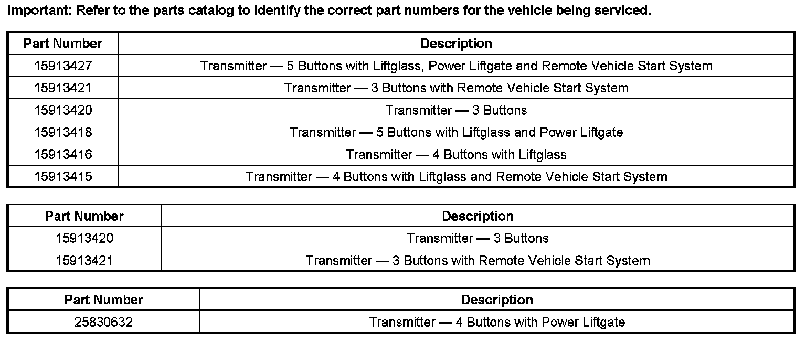
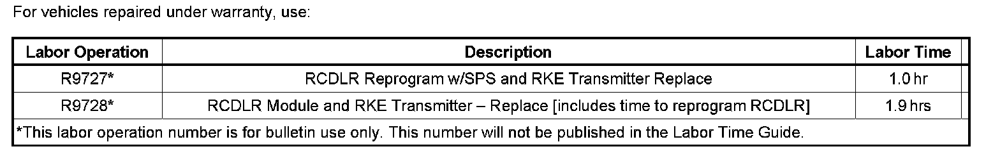

Keyless Systems - Poor Range/TPM Message Displayed
TECHNICALBulletin No.: 06-08-52-002G
Date: November 24, 2008
Subject:
Remote Keyless Entry (RKE) Inoperative, Poor Range, Tire Pressure Monitor (TPM) Message Displayed, Remote Vehicle Start (RVS) (Replace RKE Transmitters and Reprogram Remote Control Door Lock Receiver (RCDLR))
Models:
2007 Cadillac Escalade, Escalade ESV, Escalade EXT, SRX
2007 Chevrolet Avalanche, Equinox, Suburban, Tahoe
2007 GMC Yukon, Yukon Denali, Yukon XL, Yukon Denali XL
2007 Pontiac Torrent
Supercede:
This bulletin is being revised to update the Part Information. Please discard Corporate Bulletin Number 06-08-52-002F (Section 08 - Body & Accessories).
Condition
Some customers may comment about one or more of the following conditions:
^ The remote keyless entry (RKE) transmitters will not program, function and/or the RKE transmitter low battery message is displayed.
^ The Service Tire Monitor System message is displayed.
^ The new RKE transmitters cannot be programmed.
^ The remote keyless entry (RKE) and/or remote vehicle start (RVS) transmitter has poor range.
Cause
Any of these concerns may be caused by an internal fault with the transmitters and/or the RCDLR software/hardware.
Correction
Important:
Check VIS to determine if Inventory Upgrade 07007 applies and has been completed. If the vehicle is listed in the Inventory Upgrade, and the upgrade has not been performed, complete the Inventory Upgrade before proceeding with this bulletin.
DO NOT REPLACE THE BCM OR RADIO ANTENNA MODULE.
Complete the following repair procedures:
Important:
When programming a new or existing RCDLR, the programming instructions in SI must be followed.
^ On vehicles equipped with Tire Pressure Monitoring (TPM), the tire type and tire pressures must be selected in the module set-up using the Tech 2(R). If this step is not performed, the RCDLR will not retain the tire pressures after the TPM system is learned.
Tip: When selecting the Tire Type/Pressure, choose the appropriate selection on the Tech 2 based on psi, not kPa.
^ Relearn the TPM sensors using the J 46079 and following the procedure found in SI.
^ After the learn procedure is complete, be sure to set the tire pressures according to the information on the tire placard.
Important:
If the Inventory upgrade 07007 has been performed, skip the initial RCDLR programming step #1 and proceed to step # 2.
Reprogram the RCDLR with the latest software update available through TIS2WEB.
Important:
New transmitters are identified by a star on the back of the transmitter. It is important to verify that the replacement transmitters have a star on the back.
1. Replace both Remote Keyless Entry transmitters.
2. Program the transmitters using the procedure listed in SI.
3. Perform the following steps in the exact order:
1. Remove the key from the ignition.
2. Open and close the driver's door.
3. Close all other doors/trunk/liftgates.
4. Wait 5 minutes.
5. Press the Unlock Button and verify that the doors all unlock.
^ If the customer's concerns are corrected, no further repairs are required.
^ If the customer's concerns are NOT corrected, proceed with step 5.
Important:
In most cases, steps 1-3 will correct the customer's concern. In a few cases, it may be necessary to replace the RCDLR.
4. If the customer's concern is still present, replace the RCDLR.
5. Program the RCDLR with the latest software update available through TIS2WEB.
6. Reprogram both Remote Keyless Entry Transmitters.

Parts Information
Warranty Information

For vehicles repaired under warranty, use the table.

Disclaimer